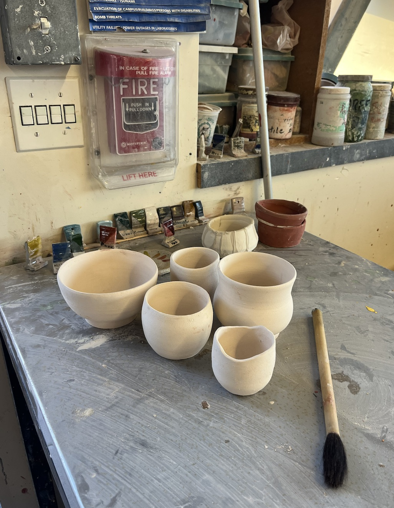
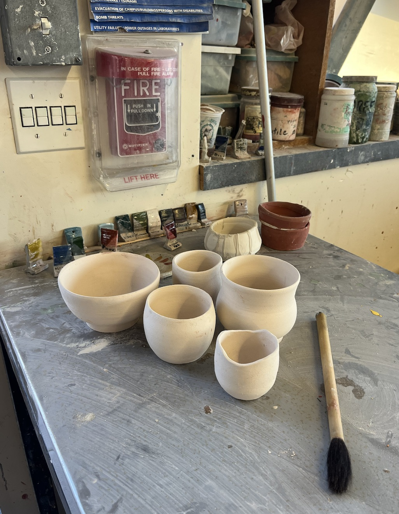
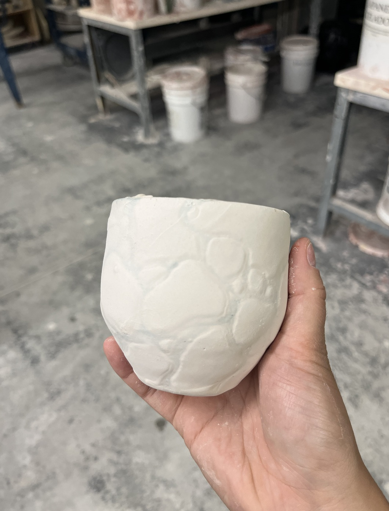
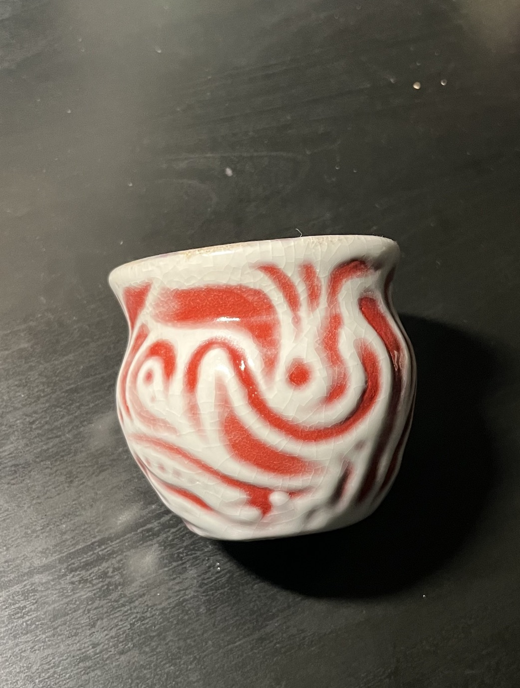
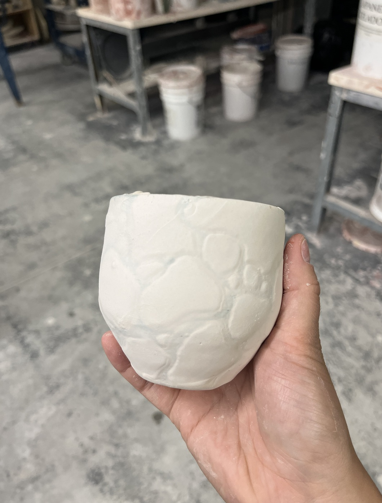
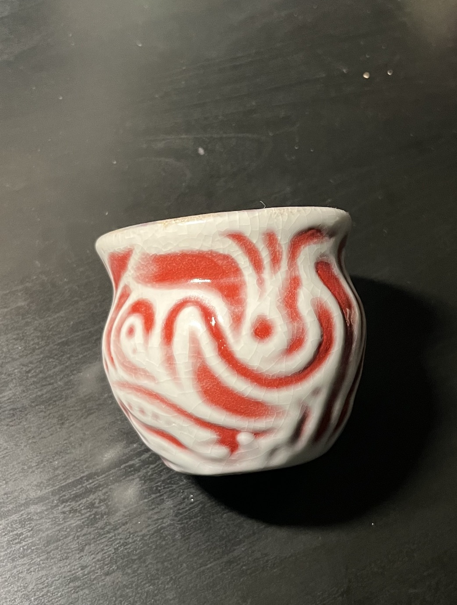
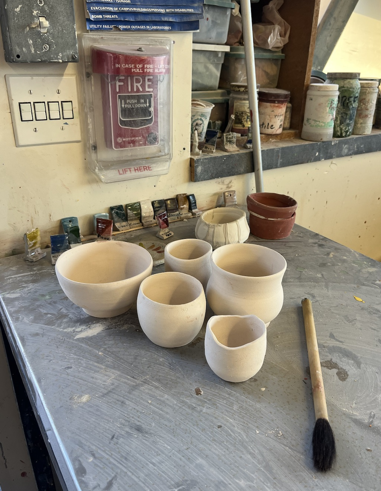
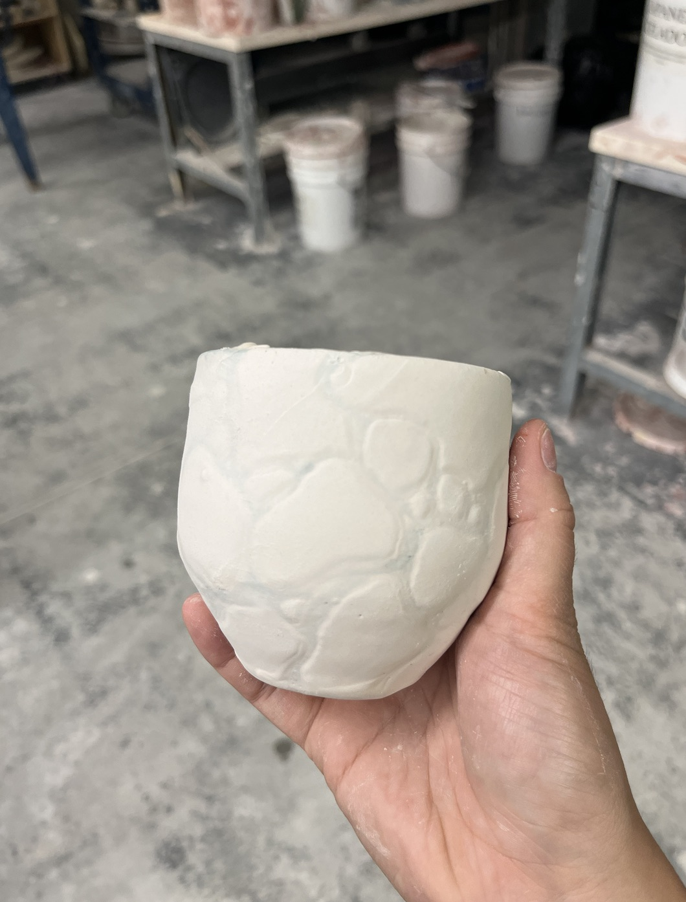
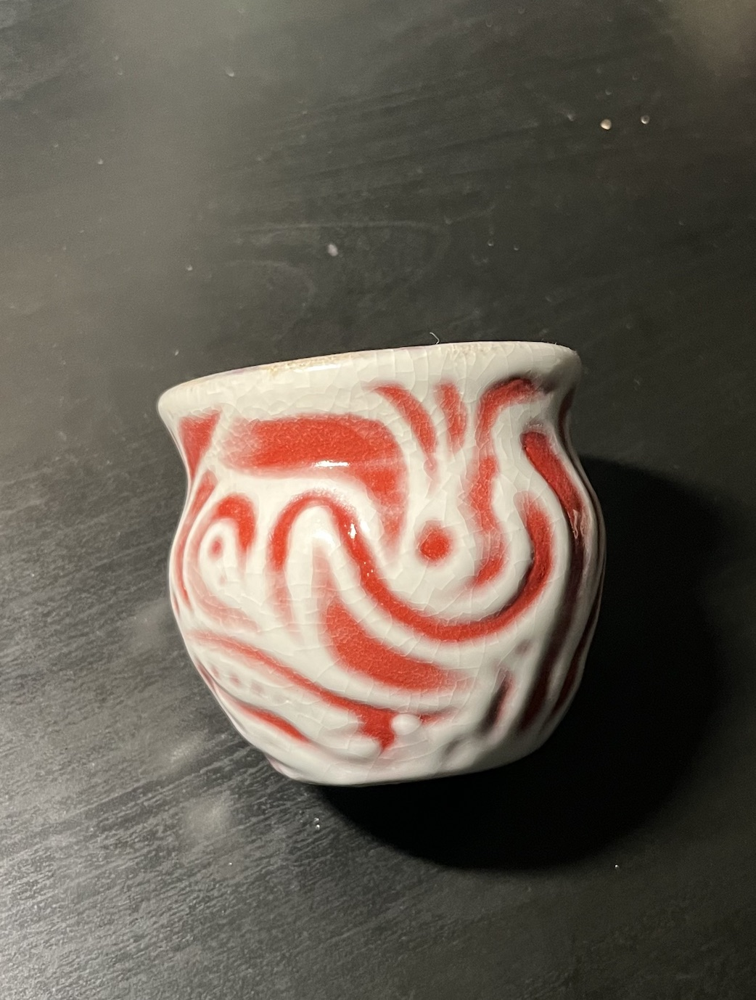

 



LeafLight is a set of ceramic pieces inspired by the forms, patterns and colors found within nature. It features various different vessels including vases, cups and mugs. Each piece draws its particular form from a certain element in nature. Three tiered bulbous vases derive their form from a stack of rocks along the shore; the organically shaped cup molded to fit a hand takes inspiration from water's ability to fit any container; the uneven edges of a sand color mug imitate the dips and grooves of sand at the beach. The glaze patterns on each piece are carefully selected to emulate certain items from the natural world including the reflection of water ripples and the texture of beached seaweed. Each piece is nothing more than a typical vessel, but the form it takes up and the precise ornamentation of each piece is what makes it special. Using clay from the earth, this ceramic project pays homage to its roots of nature and serves as a reflection of the earth from which its materials were sourced.


